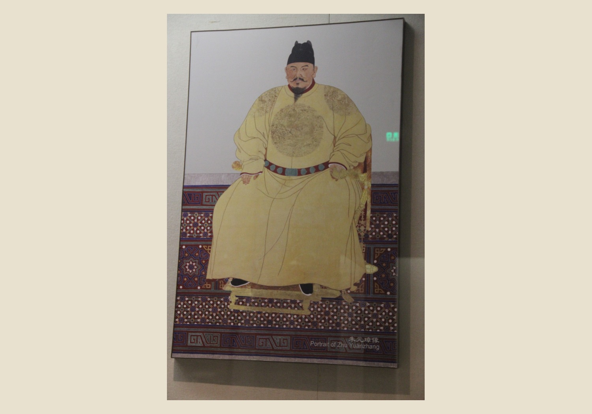
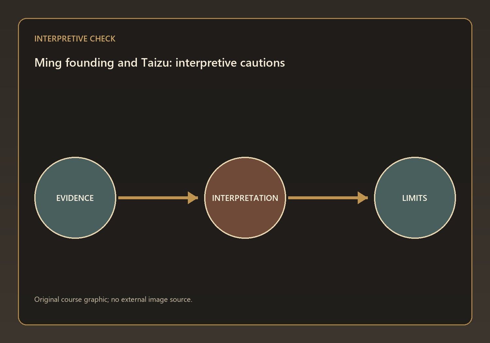
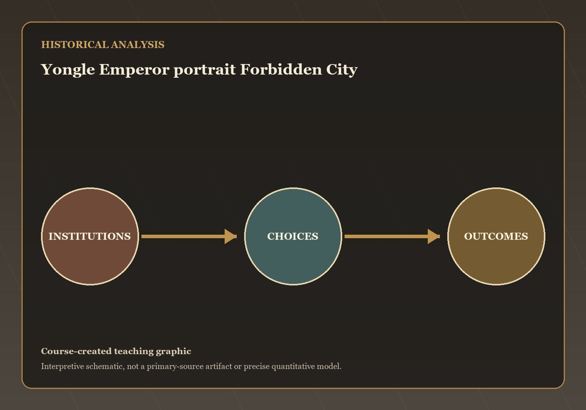
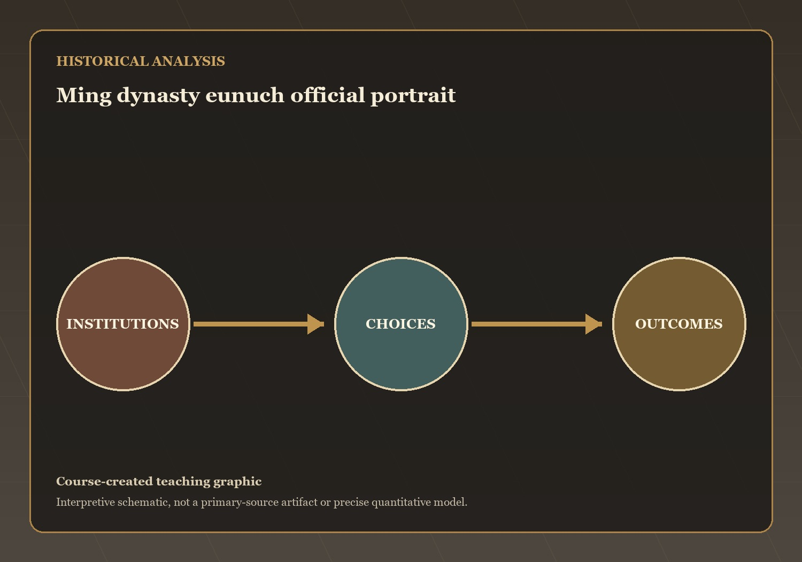

Founders, Autocracy, and the Imperial Center — HIST 270, Chapter 14, Lecture 1
Where We’re Going Today
Questions and Problems
- Q1 — The Founding of the Ming and Taizu’s Rule
- Q2 — Chengzu and the Relocation to Beijing
Mechanisms and Consequences
- Q3 — Structural Weaknesses and the Rise of Eunuchs
This lecture has treated how Taizu and Chengzu built a powerful but structurally fragile autocracy as a connected historical problem. The review…
Part 1
Q1 — evidence, mechanism, and consequence
The Founding of the Ming and Taizu’s Rule
- Zhu Yuanzhang's childhood poverty, famine experiences
- Years spent as a wandering monk deeply influenced his rule
- He sought to protect peasants through more systematic land registration, tax assessments

Visual evidence for Q1
Interpretive Stakes and Teaching Cautions
- A useful historiographical caution is to avoid a list of facts that never…
- The textbook necessarily compresses debate
- The lecture can preserve uncertainty by separating evidence from inference
- Official texts tell us what governments claimed

Visual evidence for Q1
⏸ Pause & Reflect
Zhu Yuanzhang's childhood poverty, famine experiences, and years spent as a wandering monk deeply influenced his rule. He sought to protect peasants through more…
What mechanism best explains this outcome? State your answer to Q1 as a causal claim.
Part 2
Q2 — evidence, mechanism, and consequence
Chengzu and the Relocation to Beijing
- Chengzu seized the throne through civil war and eliminated many officials who opposed…
- Despite this brutality, he undertook enormous state-building projects

Visual evidence for Q2
Interpretive Stakes and Teaching Cautions
- A useful historiographical caution is to avoid a list of facts that never…
- The textbook necessarily compresses debate
- The lecture can preserve uncertainty by separating evidence from inference
- Official texts tell us what governments claimed

Visual evidence for Q2
⏸ Pause & Reflect
Chengzu seized the throne through civil war and eliminated many officials who opposed him. Despite this brutality, he undertook enormous state-building projects
What mechanism best explains this outcome? State your answer to Q2 as a causal claim.
Part 3
Q3 — evidence, mechanism, and consequence
Structural Weaknesses and the Rise of Eunuchs
- The abolition of the chancellorship concentrated authority in the emperor but created administrative…
- Emperors increasingly relied on grand secretaries and eunuchs to manage government affairs

Visual evidence for Q3
Interpretive Stakes and Teaching Cautions
- A useful historiographical caution is to avoid a list of facts that never…
- The textbook necessarily compresses debate
- The lecture can preserve uncertainty by separating evidence from inference
- Official texts tell us what governments claimed

Visual evidence for Q3
⏸ Pause & Reflect
The abolition of the chancellorship concentrated authority in the emperor but created administrative weaknesses. Emperors increasingly relied on grand secretaries and eunuchs to manage…
What mechanism best explains this outcome? State your answer to Q3 as a causal claim.
Coming Up: Maritime Power, Frontiers, and Examination Rule
The open question: which development in this lecture most changed the range of choices available to ordinary people, and is that change visible in…
Maritime Power, Frontiers, and Examination Rule — the next stage of the course narrative.